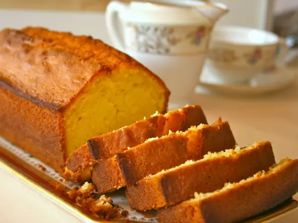

Dessert du soir

L'inimitable, l'inégalable quatre quart est un péché mignon, une madeleine de proust. J'en suis au stade de l'addiction.
Recette du dessert du soir
Ingrédients:
- du quatre quart
- du lait
- de la pâte à tartiner au chocolat
Mode opératoire:
- verser du lait dans un verre
- tartiner des tranches de quatre quart
- déguster les tranches de quatre quart au moyen du petit lait !
Brutal.
Retour